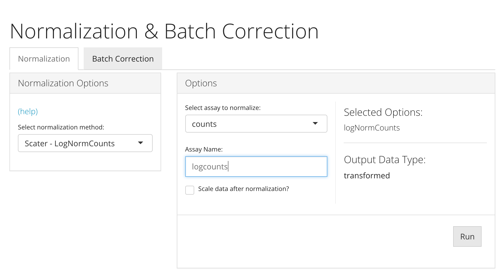
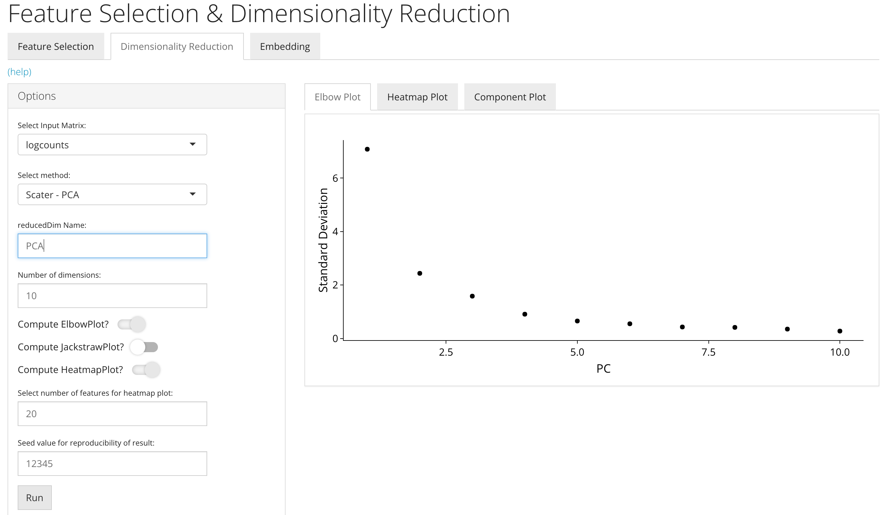
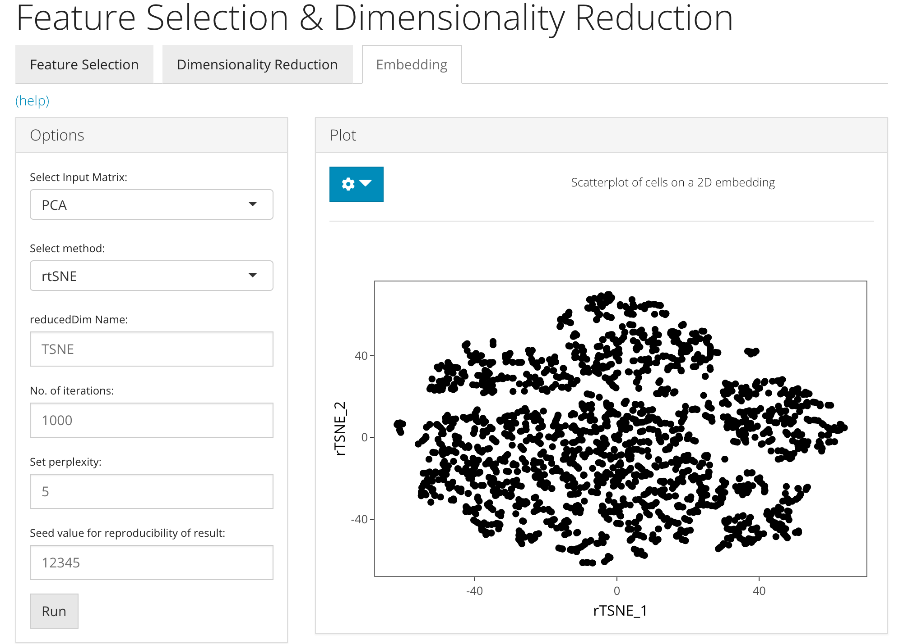
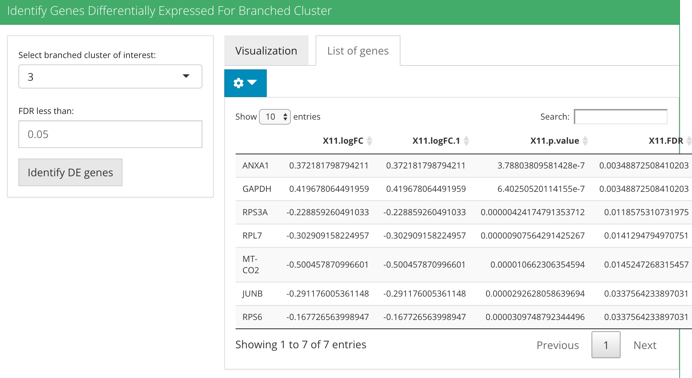

Trajectory Analysis
Nida Pervaiz
Source:vignettes/articles/trajectoryAnalysis.Rmd
trajectoryAnalysis.RmdIntroduction
Trajectory analysis is a technique to determine pattern of dynamic process experienced by cells and then arrange cells as per their progression. Trajectory is a path through high dimensional expression space that traverses various cellular states associated with a process like differentiation.
There are multiple algorithms to implement trajectory analysis however currently single cell toolkit has the implementation of TSCAN algorithm. TSCAN performs dimensionality reduction using PCA, cluster the cells, forms minimum spanning tree and then the trajectory is determined as the longest connected path of that tree. TSCAN is an unsupervised algorithm that requires no prior information. More detailed instructions on how to use TSCAN approach either through the shiny ui application (select “Interactive Analysis”) or through the R console (select “Console Analysis”) are described below:
Workflow Guide
Pre processing of the data
NOTE: This tutorial assumes that the data has already been uploaded via the upload tab of the toolkit
After the data has been successfully uploaded, user should perform log normalization. Normalization tab can be opened up by clicking on the Normalization & Batch Correction from the top menu and further selecting the Normalization sub-tab in the subsequent window.

Next, perform dimensionality reduction approach i.e. PCA. Dimensionality reduction tab can be opened up by clicking on the Feature Selection & Dimensionality Reduction from the top menu and further selecting the Dimensionality Reduction sub-tab in the subsequent window.

Final pre processing step to prepare your data for TSCAN analysis is to run 2D embedding algorithms (tSNE/UMAP). Embedding tab can be opened up by clicking on the Feature Selection & Dimensionality Reduction from the top menu and further selecting the *Embedding** sub-tab in the subsequent window.

Entry of the Panel
From anywhere of the UI, the panel for trajectory analysis can be accessed from the top navigation panel at the boxed tab and then select TSCAN.

Calculate Pseudotime Values
The UI is constructed in a sidebar style, where the left-sided sidebar works for setting the parameters and running the TSCAN, and the right part main panel is for visualization checking.
For running TSCAN, there are always three essential inputs that users should be sure with:
Saved dimension reduction name in the SingleCellExperiment - selection input “reducedDim Name”. Used for specifying which low-dimension representation to perform the clustering algorithm and building nearest neighbor graph on. Default “PCA”
The seed value to be used - selection input “Seed value for reproducibility of result”. Set the seed for random process that happens only in “random” generation. Default 12345.
The name of the clustering algorithm if done as a pre processing step (OPTIONAL) - selection input “Name of Clustering Result”. A user may input a vector equal length to the number of the samples in the SingleCellExperiment object, or can be retrieved from the colData slot. By default TSCAN auto computes the clusters using runSCRANSNN function present within the single cell toolkit.
After the parameters are set, user may run TSCAN to see the visualization of the cells pseudotime ordering. Pseudotime is the positioning of the cells along the trajectory that explains the progression of the cells and biological process.

Identify Genes Differentially Expressed For Path
For identifying DE genes for path, there are always four essential inputs that users should be sure with:
The data matrix to use - selection input “Choose an assay”. In terms of TSCAN analysis, SCTK always requires a full-sized feature expression data (i.e. assay) as a valid input.
The path of which DE genes need to be identified - selection input “Select path terminal node”. After the pseudotime values are generated of cells in first step of TSCAN, there are multiple paths generated. Paths under this tab in the UI are represented as “terminal node of the path | all the nodes present within this path.”
Log2FC cutoff setting - numeric input “Log2FC greater than”. The cutoff set here will rule out DE genes with absolute value of Log2FC (logged fold change) smaller than the cutoff from the result.
Select any cluster present within the path to discard “Select cluster to discard (OPTIONAL)”. Within the “select path terminal node” tab, when user chooses a path, the path contains certain set of clusters. Out of them user has a choice to discard any clusters which are not important or might hold cells that could dominate diferentially expressed genes.
After these parameters are set, user may run step 2 to find diferentially expressed genes for the chosen path. To present the genes we have 3 visualization tabs mainly; heatmap, top up regulated genes expression plot and top down regulated genes expression plot. The heatmap and the up regulated expression plot present the top upregulated genes which increase in expression with increasing pseudotime values along the path chosen in the MST. The down regulated expression plot represents the top genes that decrease in expression with increasing pseudotime values along the path chosen in the MST.

Identify Genes Differentially Expressed For Branched Cluster
For identifying DE genes for branched cluster, there are always two essential inputs that users should be sure with:
The cluster of which DE genes need to be identified - selection input “Select branched cluster of interest”. After the pseudotime values are generated of cells in first step of TSCAN, there are multiple clusters which have more than one branch. These clusters are listed within this option to select in order to identify diferentially expressed genes which are significant in each path deriving from the cluster. Genes are to be detected which are associated with the divergence of the branches.
FDR cutoff setting - numeric input “FDR less than”. The cutoff set here will rule out DE genes with FDR (false discovery rate) value more than the cutoff from the result.
After these parameters are set, user may run step 3 to find deferentially expressed genes for the chosen branched clusters. In terms of result, it presents two options; visualizationa and a data frame to present DE genes for each path. Within visualization option user is shown the cells belonging to the cluster chosen of interest colored by their pseudotime values along the path to which it was assigned. Within the list of genes option, a list of differentially expressed genes for each path deriving from the branched cluster are presented.


Plot expression of individual genes
This step allows the user to visualize their gene of interest. It plots all the cells in the cluster containing the branch point of the MST in the dataset. Each point is a cell colored by the expression of a gene of interest and the relevant edges of the MST are overlaid on top. There are three essential inputs that user should be sure with:
Saved dimension reduction name in the SingleCellExperiment - selection input “reducedDim Name”. Used for specifying which low-dimension representation to present the visualization of cell expression by gene on.
Gene of interest - text input “Enter gene name”. Choose the gene of interest from the DE genes in order to know the level of expression of gene in clusters.
Cluster of interest - selection input “Select cluster of interest”. Choose a specific cluster on which gene expression needs to be visualized. By default all clusters are chosen.

Basic Parameters
For TSCAN to execute, the common things are:
- The input SCE object -
inSCE. - The
colDatacolumn name to save the cluster labels (OPTIONAL) -clusterName - Users need to use useAssay for a full-sized expression data.
- Users need to use useReducedDim for specifying a matrix in reducedDims such as PCA, tsne or umap.
Example
To demonstrate simple and clear examples, here we use a filtered form of the PBMC 3K dataset from the package TENxPBMCData, which is available from the importExampleData() function. Next step is to compute a dimensionality reduction (e.g. PCA) and then lastly we perform 2D embedding (TSNE/ UMAP).
library(singleCellTK)
sce <- importExampleData("pbmc3k")The preprocessing only includes necessary steps before stepping into execution of TSCAN.
Preprocessing
sce <- runNormalization(sce, normalizationMethod = "LogNormalize", useAssay = "counts", outAssayName = "logcounts")
sce <- runDimReduce(inSCE = sce, method = "scaterPCA", useAssay = "logcounts", reducedDimName = "PCA")
sce <- runDimReduce(inSCE = sce, method = "rTSNE", useReducedDim = "PCA", reducedDimName = "TSNE")Calculate Pseudotime Values
Method specific parameters
useReducedDim , Used for specifying which low-dimension representation to perform the clustering algorithm and building nearest neighbor graph on. Default “PCA”
seed, Set the seed for random process that happens only in “random” generation. Default 12345.
cluster (OPTIONAL), A user may input a vector equal length to the number of the samples in the SingleCellExperiment object, or can be retrieved from the colData slot. By default TSCAN auto computes the clusters using runSCRANSNN function present within the single cell toolkit.
sce <- runTSCAN (inSCE = sce, useReducedDim = "PCA", seed = NULL)
plotTSCANResults(inSCE = sce, useReducedDim = "TSNE")Identify Genes Differentially Expressed For Path
Method specific parameters
useAssay, In terms of TSCAN analysis, SCTK always requires a full-sized feature expression data (i.e. assay) as a valid input.
pathIndex, After the pseudotime values are generated of cells in first step of TSCAN, there are multiple paths generated. Paths within this option are represented as “terminal node of the path | all the nodes present within this path.”
log2fcThreshold, The cutoff set here will rule out DE genes with absolute value of Log2FC (logged fold change) smaller than the cutoff from the result.
discardCluster (OPTIONAL), Within the select path terminal node, when user chooses a path, the path contains certain set of clusters. Out of them user has a choice to discard any cluster which are not important or might hold cells that could dominate diferentially expressed genes.
topN, For the visualization we have top genes parameter to select the number of genes to be presented.
direction, For the visualization we have direction parameter with choices of increasing (upregulated) and decreasing (downregulated) genes.
sce <- runTSCANDEG(inSCE = sce, pathIndex = 6)
plotTSCANPseudotimeHeatmap(inSCE = sce, pathIndex = 6,topN = 5)
plotTSCANPseudotimeGenes(inSCE = sce, pathIndex = 6, direction = "increasing")Identify Genes Differentially Expressed For Branched Cluster
Method specific parameters
useClusters, After the pseudotime values are generated of cells in first step of TSCAN, there are multiple clusters which have more than one branch. These clusters are listed within this option to select in order to identify diferentially expressed genes which are significant in each path deriving from the cluster. Genes are to be detected which are associated with the divergence of the branches.
fdrThreshold, The cutoff set here will rule out DE genes with FDR (false discovery rate) value more than the cutoff from the result.
pathIndex, From the branched cluster there exist multiple branches or paths. User is given a choice for the visualization to choose any pathIndex in order to see the number of cells within branched cluster belonging to the particular path of interest.
useReducedDim, Used for specifying which low-dimension representation to use for visualization.
sce <- runTSCANClusterDEAnalysis(inSCE = sce, useClusters = 3)
plotClusterPseudo(inSCE = sce, useClusters = 3, pathIndex = NULL, useReducedDim = "TSNE")Plot expression of individual genes
Method specific parameters
geneSymbol, Choose the gene of interest from the DE genes in order to know the level of expression of gene in clusters.
useClusters, Choose a specific cluster on which gene expression needs to be visualized. By default all clusters are chosen.
useReducedDim, Used for specifying which low-dimension representation to use for visualization.
plotTSCANDEgenes(inSCE = sce, geneSymbol = "CD74", useReducedDim = "TSNE")